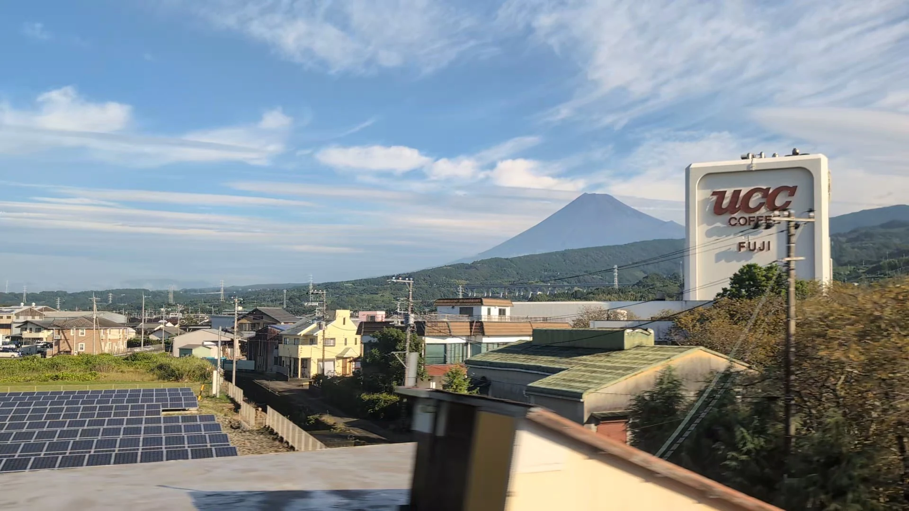
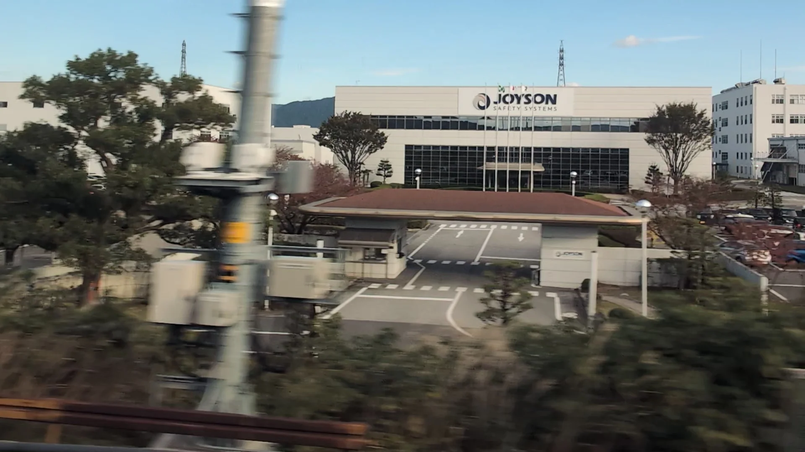

按区间浏览
乘坐东海道新干线，寻找咖啡、饮料、化妆品和日用品的生产地。通过车窗实拍认识沿线工厂，查看座位侧和辨认地标。
新横滨 → 小田原
小田原·鸭宫

E座侧行进方向右侧 Meiji Seika Pharmatech 制药厂
找找屋顶上的红色招牌
酒匂川以东，米色建筑的屋顶上挂着红色公司名称。这座位于小田原市鸭宫的制药厂生产片剂和注射剂。
三岛 → 新富士
富士山脚下

E座侧行进方向右侧 UCC 富士工厂
咖啡白塔与富士山
找找白塔上的“UCC COFFEE FUJI”。这座生产烘焙咖啡的工厂后方，正好映着富士山。

E座侧行进方向右侧 日本制纸 富士工厂・富士地区
富士山下的生活用纸
红白烟囱和富士山是辨认地标。厂区内的Crecia Kasuga新富士工厂，生产卫生纸卷等生活用纸。

E座侧行进方向右侧 兴亚工业 总部工厂
夜色中的彩虹烟囱
这里生产瓦楞纸板原纸等纸材。照片中的“虹烟”是2026年11月11日至23日的限时灯光展示，并非常设景观。
静冈 → 挂川
烧津・大井川

A座侧行进方向左侧 札幌啤酒 静冈工厂
静冈的一杯，来自烧津
成排的银色酒罐和星形标志很醒目。静冈限定啤酒“静岡麦酒”，也出自烧津的这座工厂。

E座侧行进方向右侧 纪文食品 静冈工厂
鱼糕包装上的“＋S”
连绵的红屋顶上，露出纪文的标志。这里生产鱼糕、竹轮；包装上的生产工厂代码“＋S”，指的就是这座工厂。
就在大井川铁路桥附近，另一侧车窗可见味之素的建筑。

E座侧行进方向右侧 日本雀巢 岛田工厂
河对岸的咖啡招牌
宽阔的河滩映入眼帘时，往山脚下看。岛田工厂生产咖啡，也将萃取后的咖啡渣用作锅炉燃料。
从大井川铁路桥往上游看，工厂距离铁路约1.3公里。

A座侧行进方向左侧 味之素食品・味之素Bakery
粥和还没烤好的面包
向外凸出的弧形白墙上，写着“Knorr”。同一地址内，有生产粥的味之素食品静冈工厂，以及生产冷冻面团的味之素Bakery岛田事业所。
大井川铁路桥附近，与纪文的红色标志塔分列铁路两侧。
挂川 → 滨松
挂川・袋井・滨松


A座侧行进方向左侧 丸大食品 静冈工厂
包装上的“＋P”指向挂川
树木上方是红色丸大食品标志，下方是一排圆窗。公司在2023年介绍过这里生产的长条维也纳香肠，包装上的生产工厂代码是“＋P”。
挂川站往滨松方向约4公里。下行列车会先经过资生堂。

A座侧行进方向左侧 POLA化成工业 袋井工厂
玻璃里，是自己乘坐的列车
留意化妆品工厂那一整排玻璃。光线恰好时，会映出你正在乘坐的新干线。

A座侧行进方向左侧 大冢制药 袋井工厂
蓝色墙面就是宝矿力的地标
绿色草坪后方，是巨大的蓝色“POCARI SWEAT”墙面。一眼就能认出这座生产宝矿力水特等饮料的工厂。


E座侧行进方向右侧 Unicharm Products 静冈工厂
庭院里也有熟悉的标志
顺着白墙上的黄色与橙色波纹看，庭院里也有大型标志。这里生产婴儿及成人纸尿裤、女性卫生用品、清洁擦拭布等产品。
挂川站往滨松方向约4公里。下行列车会先经过日东工业。

E座侧行进方向右侧 好侍食品 静冈工厂
咖喱和零食，都在这里
找找写着“ハウス食品”的招牌塔。这座袋井工厂生产百梦多咖喱、北海道奶油炖菜块，以及“とんがりコーン”玉米脆角。

E座侧行进方向右侧 雅马哈发动机 袋井南工厂
从铁路旁，驶向世界的海洋
红色YAMAHA字样和白色竖向格栅是地标。这里生产的是安装在船尾的发动机，也就是船外机。

滨松 → 丰桥
高塚・滨名湖・丰桥

A座侧行进方向左侧 铃木（SUZUKI）总部・高塚
屋顶上方露出红色S
住宅屋顶之间，露出汽车上熟悉的红色S。这里是铃木总部；过去在高塚生产的摩托车发动机，已于2018年转移至滨松市都田生产。
滨松站与滨名湖之间，靠近JR高塚站。下行在跨过滨名湖前，上行则在跨过之后。

A座侧行进方向左侧 SINFONIA TECHNOLOGY 丰桥制作所
轻轻搬运半导体晶圆
草坪后方的长墙上，写着“豊橋製作所”“創業1917年”。这座主要工厂生产洁净搬运设备，在制造手机等产品所需的半导体时，运送薄薄的硅晶圆。
丰桥市三弥町，二川站往东京方向。下行在抵达丰桥前，上行在离开丰桥后。
三河安城 → 名古屋
安城

E座侧行进方向右侧 山崎面包 安城工厂
早餐面包，从铁路旁出发
太阳标志与红色“ヤマザキ”就在近旁。三河安城附近的这座工厂，生产面包和日式、西式糕点。

E座侧行进方向右侧 NICHIBAN 安城工厂
熟悉的招牌，变化中的生产
红白蓝三色的“セロテープ”招牌很醒目。这座胶带工厂，也将生产范围拓展至医疗用途。
参考资料
2026年设备资料列有医疗辅助用、纸质和塑料胶带。2025年官方说明指出，Cellotape相关生产已集中至埼玉，因此不能只凭招牌判断安城目前仍生产这款产品。
名古屋 → 岐阜羽岛
清须

E座侧行进方向右侧 麒麟啤酒 名古屋工厂
酒罐像一杯杯巨型啤酒
银色与金色相间的酒罐排列成行。越过名古屋往西，找找这座位于清须、生产一番榨啤酒的工厂。
米原 → 京都
米原・彦根・近江

A座侧行进方向左侧 洋马（YANMAR）中央研究所
离开米原，找找大时钟
长条建筑上有红色“YANMAR”和大时钟。米原的这个基地是中央研究所，研究提高发动机燃油效率、替代能源等技术。
下行离开米原后不久；有乘客记录乘坐Kodama约1分钟后看见。上行则在抵达米原前。

E座侧行进方向右侧 富士达（FUJITEC）Big Wing
每天上下楼的技术，来自这里
高耸的塔是电梯研究塔。同一厂区内也有制造标准型和定制电梯的工厂，同时承担研发与生产。

A座侧行进方向左侧 Joyson 爱知川制造所
玻璃入口上方的 JOYSON
爱知川附近，玻璃入口上方可以看到「JOYSON」字样。这座工厂研发并制造汽车零部件和儿童汽车安全座椅。

A座侧行进方向左侧 乐天（LOTTE）滋贺工厂
巨大的零食招牌排成一列
大型零食和冰淇淋招牌一字排开。这里生产“雪見だいふく”“クーリッシュ”、Toppo等产品，但招牌上的商品并非全都在此制造。

A座侧行进方向左侧 Qualitech Pharma 滋贺工厂
铁路旁的蓝色片假名
野洲川附近，浅色外墙上有一行蓝色片假名，写的是公司名称。这座位于野洲市三上的工厂受其他企业委托生产药品。

A座侧行进方向左侧 日清食品 滋贺工厂
杯装米饭，也从这里出发
在栗东找找写着“日清食品”的建筑。这里也生产“カレーメシ”等杯装米饭，与另一侧E座窗外的关西工厂是不同基地。
京都 → 新大阪
山崎

E座侧行进方向右侧 三得利 山崎蒸馏所
山脚下的威士忌故乡
越过住宅屋顶和电线，能看到“山崎”字样。用于山崎单一麦芽威士忌的麦芽原酒，就在这座蒸馏所生产。
先确认座位侧
普通车下行往新大阪时，A座在行进方向左侧，E座在右侧；上行往东京时相反。绿色车厢（Green Car）的D座，与普通车E座位于同一侧。
阅读这份指南前
各工厂的用途和生产产品，依据2026年11月确认的具体资料整理；资料中的历史年月另行标明。同一站间区间内的排列不代表实际经过顺序，距离均为概数。
照片：michikusa。POLA照片中的列车彩绘：© Disney。